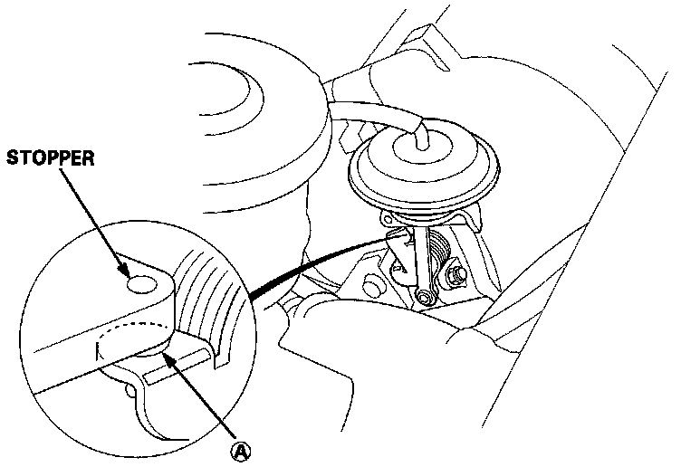
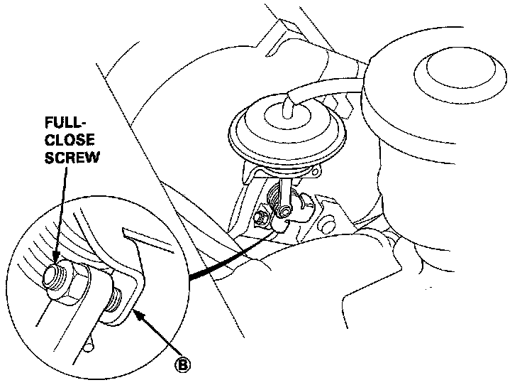

Variable Induction Control Valve: Testing and Inspection
Intake Air Bypass Control Valve Testing:

CAUTION: Do not adjust the Intake Air Bypass (IAB) control valve full-close screw. It is preset at the factory.
1. Check the IAB control valve shaft for binding or sticking.
2. Check the IAB control valve for smooth movement.
3. With the engine at idle, check that A of the IAB control valve is in close contact with the stopper when vacuum hose is disconnected.
4. With the engine at idle, check that B of the IAB control valve is in close contact with the full-close screw when the vacuum hose is connected.
Intake Air Bypass Control Valve Testing:

^ If any fault is found, clean the linkage and shafts with carburetor cleaner.
If the problem still exists after cleaning, disassemble the intake manifold and check the IAB valve body assembly.